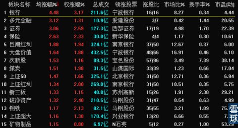
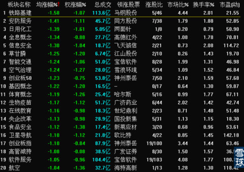
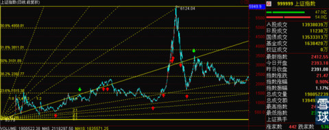
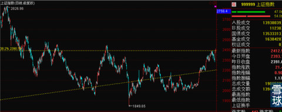
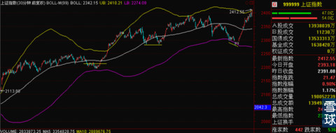

今天走成这样，简直可以用诡异来形容。虽然一上午涨幅不是大到惊人，但是银行，证券，保险这三大金融板块的走势实在是太吓人了。

而同时，前期热点在大盘狂涨的情况下，全线回调。到底是借机出货还是全线调仓换股。虽然我倾向于后者，但是现在还不是很确定。

昨天的收盘价正好是停在上证指数历史最高点和最低点之间的0.382处，而且之前这个位置有过多次的争夺和成交密集区。

放大一点来看是这样的，

今天在蓝筹带领下，全线大涨直接拿下这个关键性之后，是不是需要横盘和反复的震荡来处理之前成交密集区的压力现在还未知。但是看30分钟线的走势，下午继续上涨的可能性比较大一些。

今天金融类股票的大幅上涨估计是应该和沪港通有关系，看周末吧。这不是有消息出来证实。这个走势实在是有点诡异，我也有点懵圈了，我缓缓，下午再看。周末找时间总结。
 |
今天走成这样，简直可以用诡异来形SaiLv 2014-10-31 11:49:02 |
Copyright © 1996-2014 SINA Corporation All Rights Reserved.